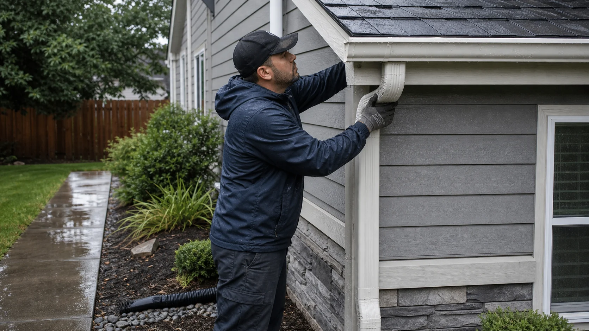

Overflow correction
Clogged runs, poor slope, undersized gutters, leaking joints, and heavy debris loads.
Connect with providers for gutters, downspouts, drainage correction, fascia review, guards, and roof-edge water control.
Gutters are part of the roof system. When they sag, clog, overflow, leak at seams, or dump water near the foundation, the damage can spread to fascia, soffits, siding, landscaping, basements, and roof edges.
RoofLink helps users explain drainage symptoms so independent providers can discuss whether repair, replacement, slope correction, downspout routing, or guards make sense.

These examples help you describe the request clearly before independent providers follow up.
Clogged runs, poor slope, undersized gutters, leaking joints, and heavy debris loads.
Extensions, splash blocks, underground routing conversations, and discharge away from foundations.
Fascia review, hanger replacement, drip edge concerns, and guard options based on trees and maintenance.
RoofLink helps organize the details. You still choose who to speak with, what to verify, and whether to hire.
Explain whether water spills over the front, behind the gutter, at corners, or from downspout areas.
Mention basement water, erosion, roof-edge rot, ice buildup, trees, or heavy leaf load.
Ask about seamless gutters, size, hangers, downspouts, guards, slope, and cleaning access.
Use provider advice to prevent roof-edge damage, siding stains, and foundation water problems.

Provider replies are useful when they help you understand scope, timing, risks, and next steps. Use the first conversation to ask direct questions before approving work.
Sizing and slopeAsk how the provider decides gutter size, downspout count, and slope correction.
Discharge planWater should move away from vulnerable foundation and walkway areas.
Maintenance realityGuard recommendations should match roof pitch, trees, debris, and cleaning expectations.
Some roof problems are not emergencies, but these signs usually deserve faster provider follow-up.
Consistent overflow can soak fascia and push water near the foundation.
Bad hangers or fascia damage can worsen under heavy rain or snow.
Water running behind gutters may damage roof edges, soffits, and siding.